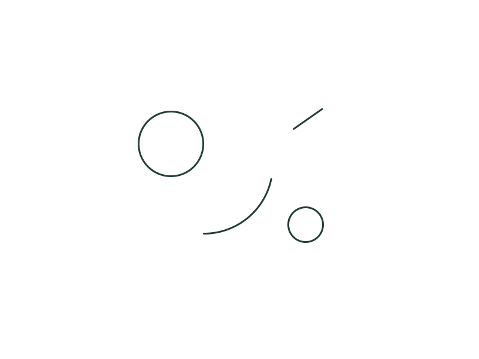
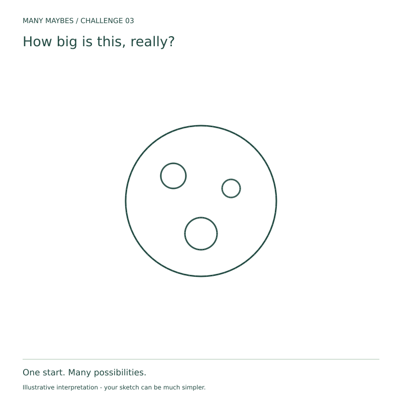
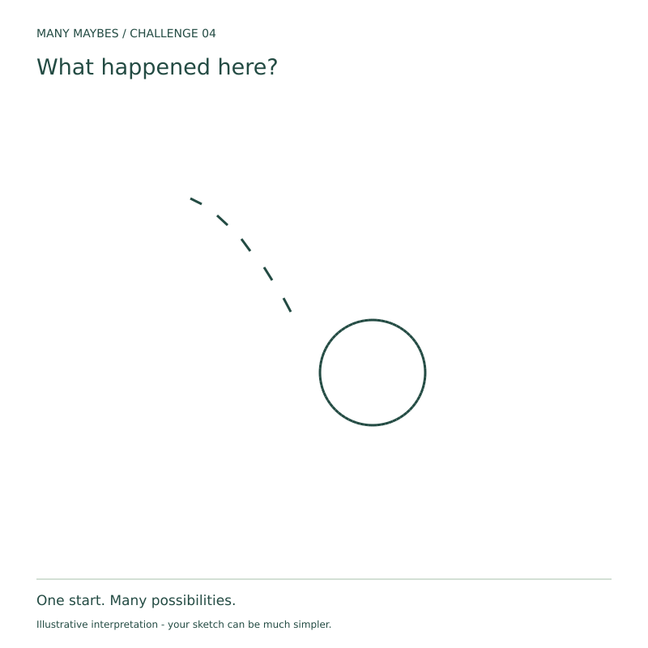
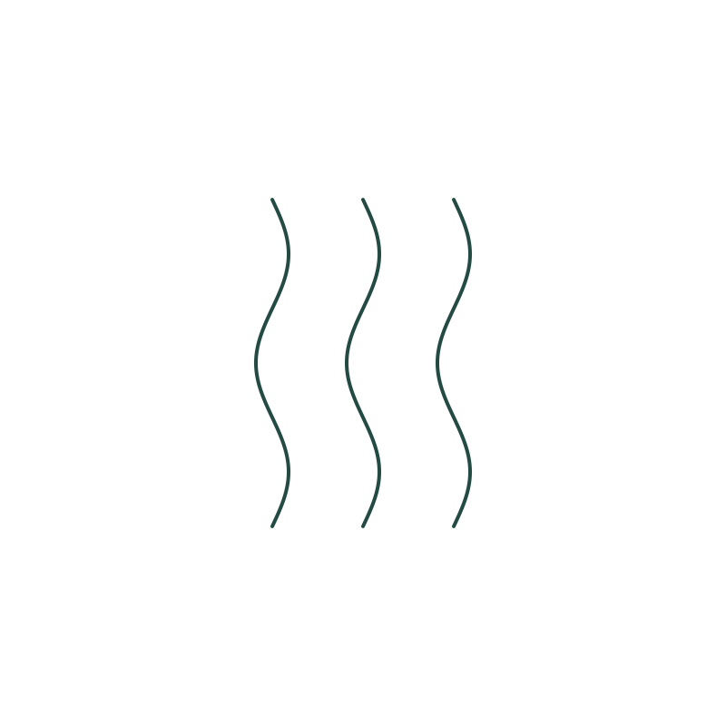
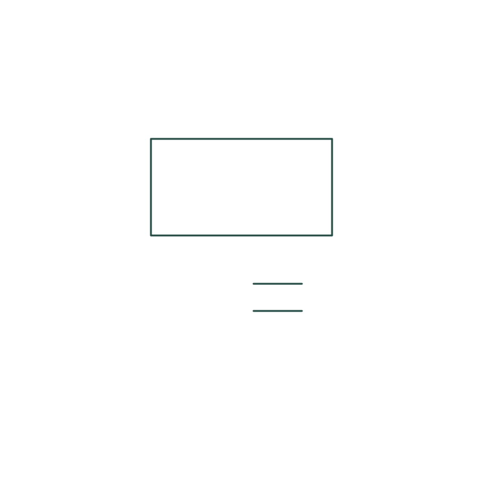
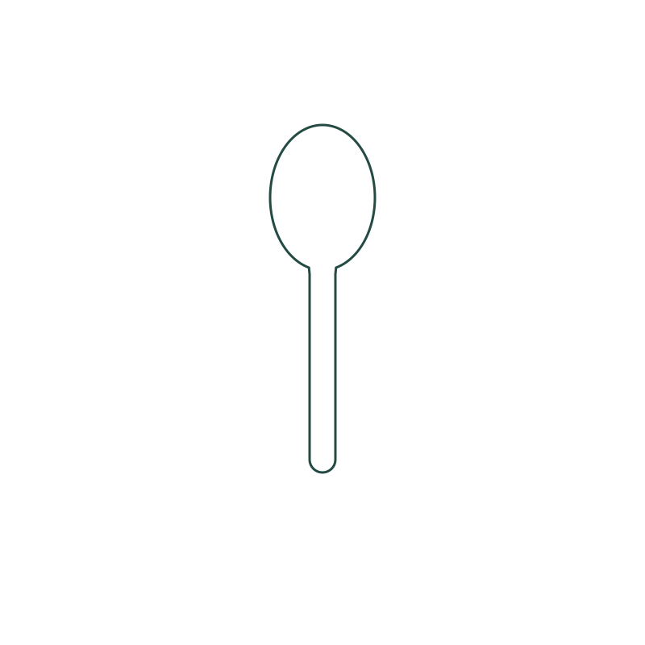
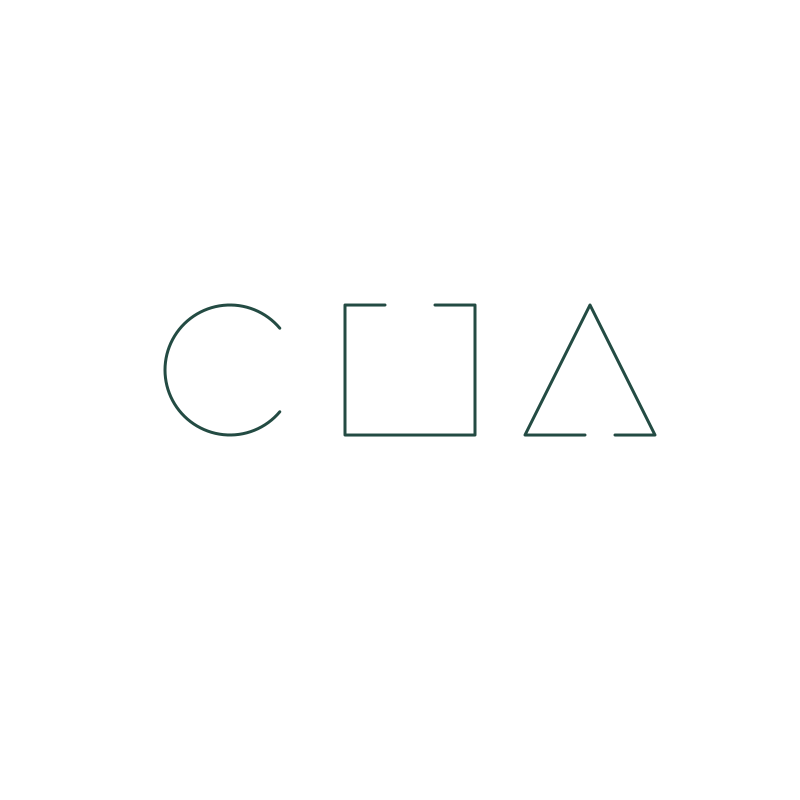

Challenge 01 · Context and viewpoint
Turn two unequal circles, an open arc and a detached stroke into an unexpected object, place or event. Keep every original mark visible and preserve their relative positions; imagine three meanings and develop your favourite.
Try Challenge 01 ↗

Challenge 02 · Negative space
Keep the two filled shapes in place and leave the central gap completely blank. Add clues on the shapes or outside the gap so the untouched space becomes the most important part of your picture.
Try Challenge 02 ↗

Challenge 03 · Scale
Keep the large circle and the three smaller circles inside it. Imagine a scene smaller than a fingernail, human-sized, or larger than a building; develop one using details that establish its scale.
Try Challenge 03 ↗

Challenge 04 · Time and storytelling
Keep the circle and five detached strokes. Add at least two visual clues that suggest what happened before this moment or what could happen next.
Try Challenge 04 ↗

Challenge 05 · Relationships
Keep both equal squares and their relative positions. Add at least two clues that reveal a relationship such as support, exchange, cause or comparison.
Try Challenge 05 ↗

Challenge 06 · Materials
Keep the three wavy lines visible and in place. Imagine three materials, then suggest one with at least two visual clues without writing its name inside the picture.
Try Challenge 06 ↗

Challenge 07 · Observer perspective
Keep the rectangle and two short parallel lines. Imagine the scene through an unusual observer’s eyes, then add clues that show where the observer is and what they can see.
Try Challenge 07 ↗

Challenge 08 · Unexpected function
Keep the spoon outline intact. Give it an unexpected job and add a setting that shows how it works; its new purpose must be something other than eating or serving food.
Try Challenge 08 ↗

Challenge 09 · Inference from absence
Keep the three incomplete outlines and their gaps. Add surrounding clues that suggest something absent or hidden, without drawing the missing thing or completing the outlines.
Try Challenge 09 ↗

Challenge 10 · Opposite interpretations
Use the same circle, rectangle and short line in two separate pictures. Add different surroundings so the two versions support opposite readings, such as welcome and unwelcome, or help and obstacle.
Try Challenge 10 ↗
Challenge 11 · Attention and noticing
Look once, note what stands out, then look again with a new cue. Afterwards, turn the same three arches into three different possibilities while keeping every original mark visible.
Try Challenge 11 ↗